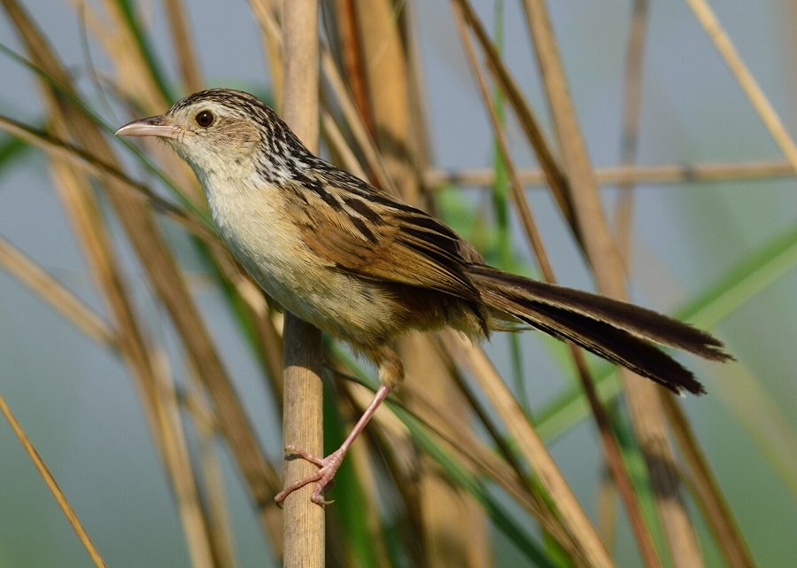

भारतीय घास चिड़ियाIndian Grassbird
Graminicola bengalensis · Pellorneidae · BRD-0277

- Scientific name वैज्ञानिक नाम
- Graminicola bengalensis Jerdon, 1863
- Family कुल
- Pellorneidae
- Hindi हिंदी
- भारतीय घास चिड़िया
- Local names स्थानीय नाम
- indian grassbird, desi ghas phudki, ghas chidiya
- Status here यहाँ की स्थिति
- native
- Movement आवागमन
- Resident, here all year
- Known from कहाँ दर्ज
- Others have published records from the wider Awadh–Purvanchal plain, none yet from Basti–Ayodhya अवध–पूर्वांचल से दूसरों के प्रकाशित अभिलेख, बस्ती–अयोध्या से अभी नहीं
- IUCN IUCN
- not evaluated
- Review समीक्षा
- not yet reviewed
When to look कब देखें
Present all year. साल भर मौजूद।
Tell it apart from इनसे अलग पहचानें
भारतीय घास चिड़िया / Indian Grassbird
Graminicola bengalensis Jerdon, 1863 — Pellorneidae
भारतीय घास चिड़िया — तराई के विशाल कछारी घास के मैदानों, नरकुल और कांस के दलदलों में रहने वाली एक भारी चोंच वाली गुप्त चिड़िया, जिसकी पीठ पर काली-सफेद लकीरें और पूंछ के सिरों पर चौड़े सफेद धब्बे होते हैं।
Quick Identification त्वरित पहचान
| Feature | Description |
|---|---|
| Plumage | Heavily streaked black-and-rufous mantle with distinct bold white shaft-streaks |
| Bill | Unusually stout, deep, heavy blackish-horn bill resembling a small grosbeak |
| Supercilium | Broad, prominent whitish-cream eyebrow extending boldly from bill to ear coverts |
| Tail | Broad, long, strongly graduated fan-shaped tail tipped with bold white terminal spots |
| Underparts | Clean white throat and central belly, bordered by warm buff flanks and undertail |
Heavily built grassland passerine with an exceptionally stout bill and a long, graduated, fan-shaped tail broadly tipped with white. Upperparts are boldly streaked with black, chestnut, and contrasting white shaft-lines. A prominent whitish supercilium frames the dark crown. Underparts are whitish centrally with warm buff flanks. Highly secretive, creeping within dense reed and tall-grass clumps.
हिंदी: भारी और मोटी चोंच वाली घास की चिड़िया। पीठ पर काले और कत्थई रंग की लकीरें तथा सफेद धारियां होती हैं। लंबी सीढ़ीदार पूंछ के सिरों पर चौड़े सफेद धब्बे होते हैं।
Morphology शारीरिक संरचना
| Feature | Description | Source |
|---|---|---|
| Bill shape | Deep, stout, laterally compressed, heavy finch-like bill | Rasmussen & Anderton (2012) |
| Tail structure | Strongly graduated, broad, rounded tail with prominent white feather tips | Rasmussen & Anderton (2012) |
| Upperparts pattern | Heavily streaked with black, chestnut, and prominent white shaft-streaks | Grimmett et al. (2011) |
The adult plumage features a heavily streaked black-and-rufous crown and mantle with sharply defined white shaft-lines that create a striking variegated pattern. The lores and a broad, distinct supercilium are creamy-white, contrasting with dusky-brown ear-coverts. The bill is remarkably deep, swollen, and stout for a warbler-like bird, dark horn-brown above and fleshy-pink below. The throat and central breast are clean white, transitioning to warm ochraceous-buff on the flanks, thighs, and undertail coverts. The tail is long, broad, and stepped, composed of broad brownish-black rectrices that carry prominent, bold white apical spots on their undersides. Legs and feet are stout and fleshy-pink; iris reddish-brown. Sexes appear alike.
Vocalisations. Delivered during brief song flights above tall grass tops or from exposed reed stems, consisting of a loud, explosive, musical phrase chik-chik-chwee-oo-wit or plink-plink-tseeeer. When disturbed within dense vegetation, it utters a harsh, grating, throaty churr.
हिंदी: शरीर पर सफेद, कत्थई और काली लकीरों का सुंदर संगम होता है। चोंच काफी मोटी और मजबूत होती है। पूंछ के नीचे सफेद धब्बे स्पष्ट दिखते हैं। आंखें लाल-भूरी और पैर गुलाबी होते हैं।
Behaviour & Ecology व्यवहार एवं पारिस्थितिकी
An obligate specialist of undisturbed primary tall alluvial grasslands and riverine reed beds. It lives deep within the impenetrable tangles of Kans grass (Saccharum spontaneum), Phragmites karka, and Narenga porphyrocoma, rarely emerging into open view. It creeps mouse-like through the dense lower stems, clambering up and down vertical stalks with its stout feet. During the monsoon breeding season, males become conspicuous by ascending to the topmost plumes of tall grasses early in the morning, occasionally launching into brief fluttering display flights before dropping vertically back into cover.
हिंदी: यह केवल विशाल नदी कछारों और नरकुल के दलदली जंगलों में ही रहती है। यह जमीन के पास घनी घासों में चूहे की तरह रेंगती है। बारिश के मौसम में नर घास के सिरों पर आकर तेज आवाज में गाता है।
Life Cycle / Phenology जीवन चक्र एवं फेनोलॉजी
The breeding season coincides with the monsoon rains from June to September when tall riverine grasses reach maximum density and height. The nest is a deep, stout cup or loose dome-like pouch built of coarse dry grass blades, reed shreds, and rootlets, lined with finer grass panicles (Ali & Ripley 1983). It is positioned low down in a dense clump of sedges or tall grass, typically 0.3 to 1 m above the damp or waterlogged ground (Ali & Ripley 1983). The female lays a clutch of 3 to 4 eggs, pale pinkish or creamy-buff, speckled and spotted with purplish-brown and dark liver-colored blotches (Ali & Ripley 1983). Incubation lasts 13 to 15 days, shared by both adults (Ali & Ripley 1983).
हिंदी: प्रजनन वर्षा ऋतु में जून से सितंबर के दौरान होता है जब घास काफी ऊंची और घनी हो जाती है। जमीन से आधा मीटर ऊपर घास के झुरमुट में कटोरेनुमा घोंसला बनाकर 3 से 4 चित्तीदार अंडे दिए जाते हैं।
Diet and Feeding Behaviour आहार एवं भोजन व्यवहार
Strictly insectivorous, feeding on small to medium invertebrates inhabiting tall grassland foliage. The diet includes grasshoppers, katydids, small crickets, beetles, leafhoppers, weevils, caterpillars, and spiders. It uses its heavy, stout bill to crush tough chitinous beetle shells and grasshopper limbs that smaller warblers cannot exploit.
हिंदी: इसका भोजन केवल कीड़े-मकोड़े हैं। यह अपनी मजबूत चोंच से सख्त खोल वाले भृंगों, टिड्डों, इल्लियों और मकड़ियों को तोड़कर खाती है जो अन्य छोटी चिड़ियों के लिए कठिन होते हैं।
Predators / Natural Enemies प्राकृतिक शत्रु एवं शिकारी
Because it nests close to the ground in wetland meadows, nests are frequently threatened by rising monsoon floodwaters and wetland predators. Common predators include the checkered keelback (Fowlea piscator), Indian rat snake (Ptyas mucosa), jungle cats (Felis chaus), and large marsh harriers (Circus aeruginosus). When threatened, the birds rely entirely on extreme stealth and cryptic camouflage, freezing motionlessly against grass stems.
हिंदी: पानी से भरे मैदानों में रहने के कारण बाढ़ और जल-सांपों जैसे पनिहा सांप और धामन से घोंसलों को खतरा रहता है। शिकारी बिल्ली और दलदली चीलें वयस्कों का शिकार करती हैं।
Agricultural / Human Relevance कृषि एवं मानव उपयोगिता
Serves as an important ecological indicator of intact floodplain wetlands and wet grassland health. While not typically found in open tilled crop fields, it consumes substantial numbers of grasshoppers and crop pests that breed in the boundary marshes and drainage channels of agricultural floodplains.
हिंदी: यह स्वस्थ नदी कछारों और आर्द्रभूमियों की प्रमुख सूचक प्रजाति है। यह खेतों के किनारे दलदलों में पनपने वाले टिड्डों और हानिकारक कीटों को नियंत्रित करने में सहायक है।
Expected Locally क्षेत्रीय संभावना
Not a field record. Written from published accounts for eastern Uttar Pradesh. No confirmed local sighting yet — if you have seen it, that is what the atlas needs.
अभी तक स्थानीय पुष्टि नहीं। यह विवरण प्रकाशित स्रोतों से है, किसी अवलोकन से नहीं।
GBIF holds published records across the northern Gangetic plain and throughout the Terai floodplains of eastern Uttar Pradesh. It is expected in the expansive alluvial grasslands and reed beds flanking the Ghaghara and Sarayu river courses, especially within protected flood basins where tall grasses escape seasonal burning and grazing. A confirmed local record requires a clear photograph showing the stout bill, striped mantle, and white tail tips with date and location details.
हिंदी: यह घाघरा और सरयू नदी के विस्तृत कछारी घास के मैदानों और नरकुल के दलदलों में संभावित है। पुष्टि के लिए मोटी चोंच और पूंछ के सफेद सिरे दर्शाने वाली स्पष्ट तस्वीर चाहिए।
Distribution वितरण
Restricted to the river basins of the northern Indian subcontinent, from the northern Indus and Punjab eastwards across the Terai belt of Uttar Pradesh, Bihar, West Bengal, Assam, and into Bangladesh. Populations are strictly localized within surviving tracts of wet tall alluvial grasslands.
हिंदी: यह मुख्य रूप से उत्तरी भारत, तराई क्षेत्र, असम और बांग्लादेश के विशाल नदी कछारों तक ही सीमित है। यह केवल उन्हीं इलाकों में मिलती है जहां घनी और ऊंची घास बची हुई है।
Research Questions शोध प्रश्न
- How do seasonal agricultural expansion and uncontrolled post-winter grassland burning affect local breeding density in the Ghaghara floodplains?
- What are the minimum patch size requirements of intact tall grassland needed to sustain viable resident populations?
- What specific prey species are selected for feeding nestlings during the height of the monsoon?
- How do individuals survive severe monsoon inundation events when floodwaters submerge the lower grass stems?
- क्या बाढ़ के समय यह सुरक्षित ऊंचे बांधों या रेलवे तटबंधों की घासों में शरण लेती है?
- क्या स्थानीय स्तर पर कांस और नरकुल की व्यावसायिक कटाई से इसके घोंसले नष्ट होते हैं?
Similar Species समान प्रजातियाँ
| Similar species | Distinction | Hindi distinction | |
|---|---|---|---|
| Bristled Grassbird \ | Chaetornis striata | Rounder ungraduated tail without white tips; five stiff rictal bristles along gape; streaked breast | ब्रिसल-फेस्ड ग्रासबर्ड की पूंछ पर सफेद धब्बे नहीं होते और इसके चेहरे पर लंबे कड़े बाल होते हैं |
| Striated Grassbird \ | Megalurus palustris | Significantly larger total length; long graduated unpatterned tail; duller sandy-brown coloration | स्ट्रिएटेड ग्रासबर्ड आकार में काफी बड़ी होती है और इसकी पूंछ पर सफेद सिरे नहीं होते |
| Chestnut-capped Babbler \ | Timalia pileata | Bright chestnut crown cap, white forehead, black-streaked white throat, and plain unstreaked back | चेस्टनट-कैप्ड बैबलर के सिर पर लाल टोपी और सादे भूरे पंख होते हैं, पीठ पर लकीरें नहीं होतीं |
Field rule: Secretive tall-grass dweller with unusually stout bill, boldly streaked black, rufous, and white mantle, and long graduated tail broadly tipped white.
हिंदी: बेहद मोटी चोंच, पीठ पर काली-सफेद लकीरें और लंबी सीढ़ीदार पूंछ के सिरों पर चौड़े सफेद धब्बों वाली घनी घास की चिड़िया।
Taxonomy & Classification वर्गिकी एवं वर्गीकरण
Original description. Jerdon (1863), The Birds of India, 2, p. 177; type locality: Purnea, Bihar, India.
Subspecies. Monotypic species following recent splits that separated the southern Chinese form as a distinct species (Graminicola striatus).
Family and order placement. Placed in the ground babbler family Pellorneidae, order Passeriformes.
IUCN status rationale. Not evaluated by the IUCN Red List; globally threatened by extensive wetland drainage and conversion of alluvial grasslands to agriculture.
हिंदी: जर्डन ने 1863 में बिहार के पूर्णिया से इसका पहला वैज्ञानिक विवरण दिया था। यह पेलोर्निइडे कुल का सदस्य है और प्राकृतिक कछारों के घटने से संकट में है।
Photo Gallery फोटो गैलरी
No photos yet — add field photos to media/species/indian_grassbird/ and run node scripts/sync_photos.js.
Photos needed आवश्यक फोटो
- [ ] Adult perched briefly on top of tall grass plume displaying bold white mantle streaks (घास की चोटी पर बैठी चिड़िया की पीठ की सफेद लकीरों का दृश्य)
- [ ] Close-up of head highlighting the remarkably heavy stout bill and pale supercilium (मोटी चोंच और सफेद भौंह का क्लोज-अप दृश्य)
- [ ] Ventral view of fanned tail showing broad white terminal spots (फैली हुई पूंछ के नीचे के चौड़े सफेद धब्बों का स्पष्ट दृश्य)
- [ ] Individual creeping mouse-like through lower stems of Phragmites reed beds (नरकुल के तनों के बीच फुदकती हुई चिड़िया का दृश्य)
- [ ] Vast alluvial riverine tall grassland habitat along the floodplain (नदी कछार के विस्तृत घास के मैदान का परिदृश्य)
References संदर्भ
- Original description: Jerdon, 1863 — see GBIF.
- Grimmett, R., Inskipp, C. & Inskipp, T. (2011). Birds of the Indian Subcontinent. Christopher Helm, London.
- Rasmussen, P. C. & Anderton, J. C. (2012). Birds of South Asia: The Ripley Guide. Vols. 1 and 2. Lynx Edicions, Barcelona.
- Ali, S. & Ripley, S. D. (1983). Handbook of the Birds of India and Pakistan. Compact ed. Oxford University Press, New Delhi.
- GBIF Occurrence Data — Graminicola bengalensis, India (2025).
Source file: species/fauna/birds/indian_grassbird.md